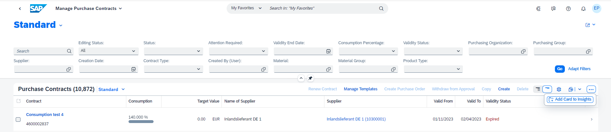
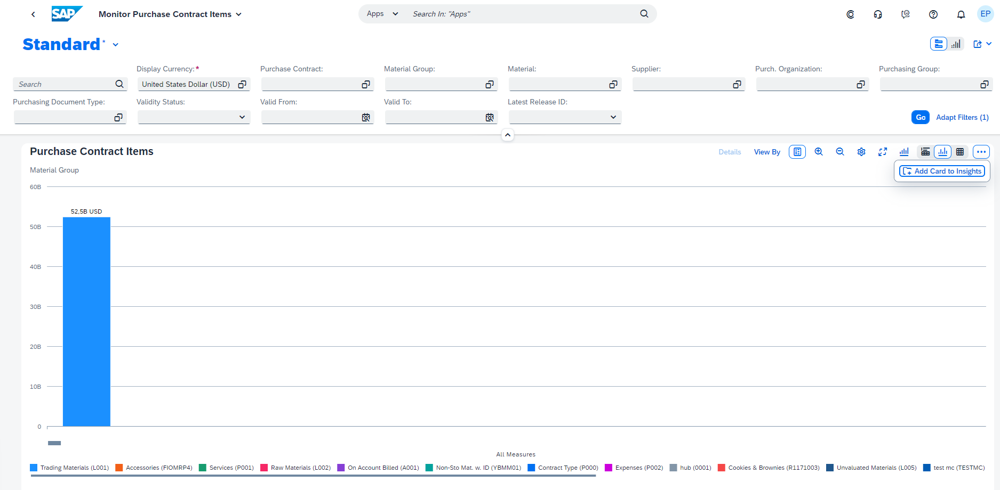

Creating Cards for the Insights Cards Section of My Home in SAP S/4HANA Cloud Public Edition and My Home in SAP S/4HANA
Creating Cards for the Insights Cards Section of My Home in SAP S/4HANA Cloud Public Edition and My Home in SAP S/4HANA
An option for tables in the list report or charts in the analytical list page allows end users to create cards that can be added to the
Insights section of My Home in SAP S/4HANA Cloud Public Edition and My Home in SAP S/4HANA.
Prerequisites
You must enable My Home in SAP S/4HANA Cloud Public Edition and My
Home in SAP S/4HANA to create and add cards.
Once you've enabled My Home in SAP S/4HANA Cloud Public Edition and My
Home in SAP S/4HANA, the Add Card to
Insights option automatically appears in the overflow toolbar of the table in list report applications and the overflow
toolbar of the chart in analytical list page applications.

Add Card to Insights Option in the Table Toolbar of List Report

Add Card to Insights Option in the Chart Toolbar of Analytical List Page
The card creation dialog shows only those columns that are supported for a card. The card supports single-valued
DataField based columns. It also supports columns with field values displayed as links such as
DataFieldWithUrl, semantic links, and DataField with QuickViewFacets. In
addition, SAP Fiori elements for OData
V4 also supports
DataFieldWithIntentBasedNavigation and DataFieldWithNavigationPath columns.
The columns that are not supported by the card creation dialog include:
-
Image
-
Multi-valued based columns
-
FieldGroup based columns
-
Columns with inline action
-
Columns with navigation button
-
DataFieldForAnnotation based columns (for contact or address fields)
-
Custom columns
You can switch off the option to add cards to the Insights Cards section of My Home using the
manifest setting.
Additional Features in SAP Fiori Elements for OData V2
Using the manifest.json, list report applications can choose to hide this feature by setting the
addCardtoInsightsHidden property within tableSettings to true, as displayed in
the following sample code:
Hidden
"sap.ui.generic.app": {
"pages": [{
"entitySet": "Zfarvd_Bs_Hd_Bo",
"component": {
"name": "sap.suite.ui.generic.template.ListReport",
"list": true,
"settings": {
"tableSettings": {
"addCardtoInsightsHidden": "true" //default value false
}
}
}
}]
}Similarly, using the manifest.json, analytical list page applications can choose to hide this feature by setting the
addCardtoInsightsHidden property within chartSettings to true, as displayed in
the following sample code:
Hidden
"sap.ui.generic.app": {
"pages": [{
"entitySet": "Zfarvd_Bs_Hd_Bo",
"component": {
"name": "sap.suite.ui.generic.template.AnalyticalListPage",
"list": true,
"settings": {
"chartSettings": {
"addCardtoInsightsHidden": "true" //default value false
}
}
}
}]
}Additional Features in SAP Fiori Elements for OData V4
The card creation feature only supports single view scenarios and single entity-multi view scenarios with responsive tables in list
report applications.
To disable the Add Card to Insights option in the table toolbar, add the following settings to the manifest:
Hidden
"controlConfiguration": {
"@com.sap.vocabularies.UI.v1.LineItem": {
"tableSettings": {
"type": "ResponsiveTable",
"enableAddCardToInsights": false
}
}
}To disable the Add Card to Insights option in the chart toolbar, add the following manifest settings:
Hidden
"controlConfiguration": {
"@com.sap.vocabularies.UI.v1.Chart": {
enableAddCardToInsights: false
}
}
-
When creating an integration card from the list report table, the following changes aren't retained when navigating back
from the card
-
Cards don't have the same formatting for unit of measure fields as seen in the list report table.
Parent topic:
Previous:
Next: